People

Qimin Yan
Associate Professor of Physics, Department of Physics, Northeastern University
Dr. Qimin Yan is Associate Professor of Physics at Northeastern University, where he leads a research program on artificial intelligence and data-driven/computational design of quantum and energy materials. He received his Ph.D. in Materials from the University of California, Santa Barbara, and completed postdoctoral training at the Molecular Foundry, Lawrence Berkeley National Laboratory, and the Department of Physics at UC Berkeley. Before joining Northeastern in 2022, he was Assistant Professor of Physics at Temple University. He received the NSF CAREER Award (2022) and the DOE Early Career Award (2019).
Group members
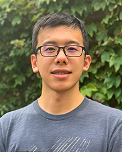
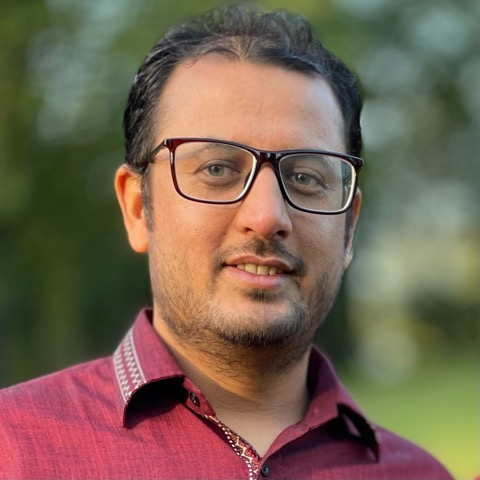
Alumni
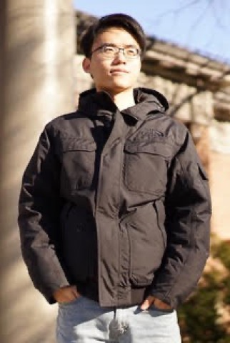
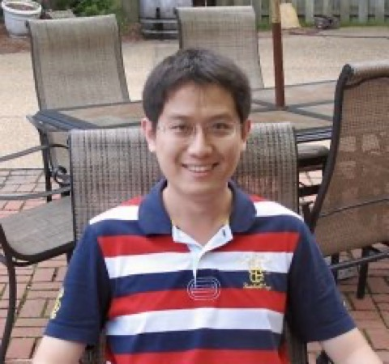
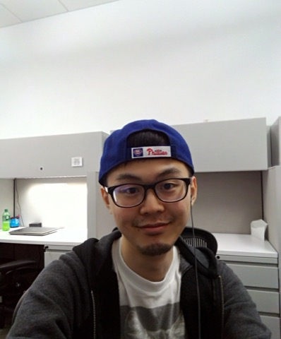
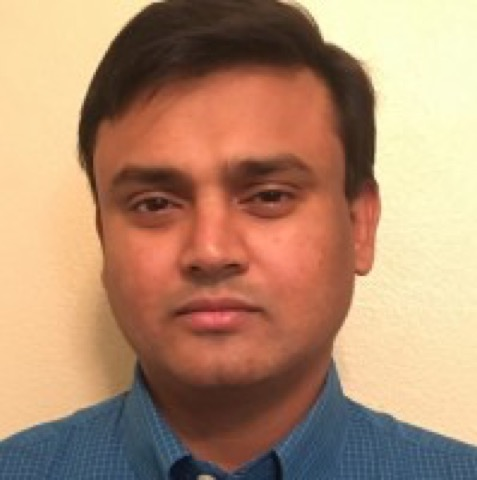
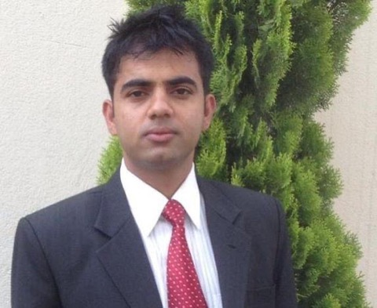
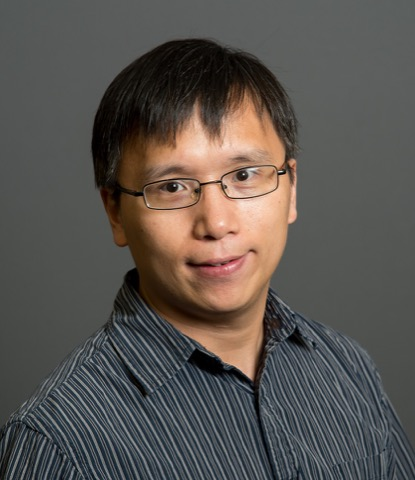
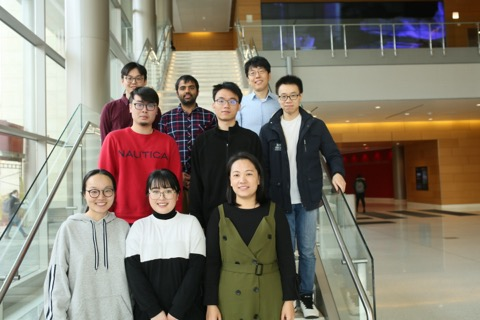
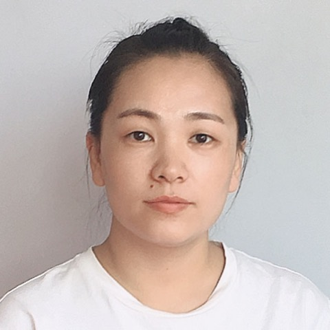
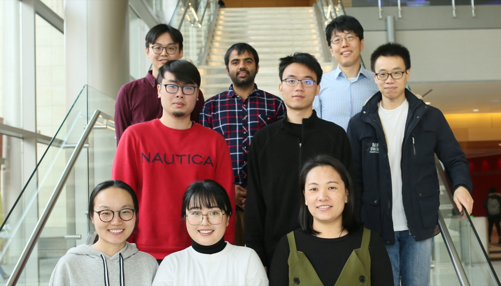